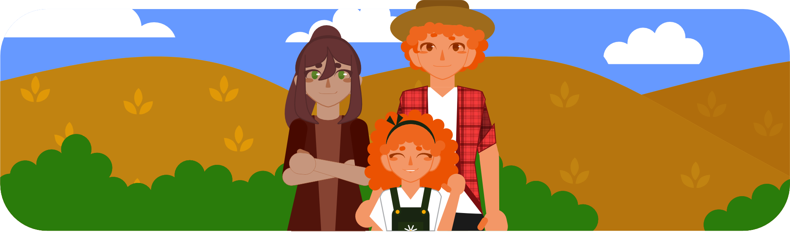

Clara é uma menina muito curiosa e esperta que vive com seus pais, Lia e Julio, em uma fazenda no interior de Irati, no Paraná. Ele adora passar seus dias explorando a fazenda que era enorme, mas sempre indo apenas até onde seus pais permitiam para a sua segurança.
Ela se encantava com os animais, e principalmente com os campos dourados que se estendiam ao redor da fazenda, os enormes campos de trigo.
Desde que era muito pequena, Clara acompanhava seus pais nas tarefas diárias da fazenda. Vendo eles trabalharem e cuidarem daquelas plantas tão importantes. Ela aprendeu que o trigo era uma planta especial, cujos grãos eram fundamentais para fazer inúmeras coisas, como por exemplo, vários tipos de farinha, consequentemente o pão, bolos e muitos outros alimentos deliciosos.
Mas ela, mesmo tendo consciência do quão importante o trigo era, ainda queria entender mais sobre como essa planta crescia e chegava até a mesa de inúmeras pessoas, do campo até a cidade.
Um dia, enquanto acompanhava seus pais até a plantação, Clara fez uma pergunta curiosa:
— Mamãe, como o trigo nasce?
Ouvindo essa pergunta, Lia sorriu e a respondeu:
— O trigo começa a crescer a partir de pequenas sementes que plantamos no solo. No início, é apenas uma pequena plantinha verde, mas que aos poucos e com o cuidado que damos, elas crescem até virarem aquelas plantas maiores, com cor quase dourada.
Animada, Clara ouviu e aceitou aquela resposta, mas sua curiosidade ia para muito além disso. Decidida, em entender e aprender mais sobre todos os processos do trigo até os alimentos que consumimos, ela acompanhou seus pais do plantio até a colheita, em uma jornada cheia de descobertas e aprendizados.
Na primavera, Clara acompanhou seus pais na preparação do solo para o plantio do trigo que iria se iniciar. Eles utilizaram tratores equipados com sistemas de GPS para arar a terra de forma precisa e eficiente. Clara aprendeu como o uso de tecnologia ajudava a maximizar a produtividade da fazenda.
— Olha filha, com o GPS, podemos garantir que cada fileira de trigo seja plantada no lugar certo, otimizando muito mais o uso do solo. — Explicou seu pai, enquanto ajustava as configurações no painel do trator com ela sentada em seu colo vendo tudo.
Clara estava encantada ao ver como a tecnologia facilitava o trabalho na fazenda. Ela acompanhou também a aplicação de fertilizantes de forma precisa usando um distribuidor controlado por computador, que garantia a distribuição uniforme dos nutrientes necessários para o crescimento saudável do trigo.
Com o auxílio de drones equipados com câmeras infravermelhas, Clara e seus pais monitoraram o plantio das sementes de trigo. Eles conseguiram verificar a distribuição das sementes pelo campo, garantindo que cada área recebesse a quantidade adequada de sementes.
— Olha, mamãe! Os drones mostram onde precisamos fazer ajustes na distribuição das sementes. — Exclamou Clara, enquanto observava as imagens transmitidas pelo drone em um tablet.
— Sim, querida. Com essas informações, podemos garantir que as sementes de trigo sejam plantadas de maneira uniforme e eficiente. — Respondeu sua mãe, sorrindo ao ver o entusiasmo da filha.
Clara aprendeu a importância de cuidar do solo e das sementes de trigo desde o início, utilizando tecnologia de ponta para garantir um crescimento robusto e produtivo.
Com o avanço da estação, Clara viu as plantas de trigo crescerem vigorosamente. Seus pais explicaram como a fazenda utilizava um sistema de irrigação automatizado, que monitorava a umidade do solo e aplicava água conforme necessário.
— Papai, essas máquinas de irrigação são incríveis! Elas garantem que as plantas de trigo recebam a quantidade certa de água.— Disse Clara, admirando a eficiência das máquinas.
— Sim, Clara. Isso ajuda a maximizar o crescimento das plantas, garantindo que tenhamos uma colheita saudável e abundante. — Explicou seu pai, ajustando os sensores de umidade no sistema de irrigação, sorrindo orgulhoso de sua pequena.
Clara também aprendeu sobre o manejo integrado de pragas e doenças na lavoura de trigo. Ela viu como seus pais utilizavam tecnologias avançadas para monitorar e controlar pragas de forma sustentável, minimizando o uso de produtos químicos e protegendo o meio ambiente.
Quando o trigo estava pronto para a colheita, Clara acompanhou seus pais na preparação das colheitadeiras equipadas com sistemas de automação avançados. Elas eram capazes de colher o trigo de forma eficiente, ajustando-se automaticamente às condições do campo.
— Mas papai, como essas colheitadeiras sabem quando o trigo está pronto para ser colhido? — Perguntou Clara, enquanto observava as máquinas funcionarem.
— As colheitadeiras utilizam sensores para identificar o estágio ideal de colheita, garantindo que os grãos estejam maduros e prontos para serem processados. — Explicou seu pai, mostrando como os monitores na cabine da colheitadeira indicavam o progresso da colheita.
Clara acompanhou o monitoramento do processo de colheita, vendo o funcionamento dos sistemas de automação e garantindo que a colheita fosse realizada com eficiência e precisão.
Após a colheita, Clara acompanhou seus pais até o centro de processamento de grãos, onde o trigo seria armazenado e processado. Eles utilizaram máquinas de limpeza e secagem automatizadas para preparar os grãos de trigo para o armazenamento.
— Mamãe, como essas máquinas sabem quais grãos estão prontos para serem armazenados? — Perguntou Clara, enquanto observava as máquinas trabalharem.
— As máquinas utilizam sensores para verificar a qualidade dos grãos, removendo impurezas e garantindo que apenas os grãos de melhor qualidade sejam armazenados. — Respondeu sua mãe, explicando o funcionamento dos equipamentos.
Clara aprendeu que a tecnologia não só facilitava o trabalho na fazenda, mas também garantia a qualidade e a segurança dos alimentos produzidos. Ela soube que aqueles grãos de trigo seriam transformados em farinha de alta qualidade, pronta para ser utilizada na fabricação de pães fresquinhos e outros alimentos deliciosos.
Ao final da jornada, Clara sentiu um grande orgulho ao ver todo o processo completo, desde a preparação do solo até o processamento do trigo. Ela sabia que cada etapa, impulsionada pela tecnologia avançada, era essencial para garantir que o trigo chegasse à mesa das pessoas como alimento nutritivo e saboroso.
— Mamãe, papai, obrigada por me ensinarem tanto sobre o trigo e por me mostrarem como a tecnologia pode fazer a diferença na agricultura, e como a agricultura faz diferença em tudo, não é? — Disse Clara, abraçando seus pais com carinho.
Seu pai sorrindo a pegou no colo para um abraço ainda mais confortável junto de sua mãe.
— Isso mesmo princesa, a agricultura faz muita diferença, não somente na produção de alimentos, ela faz diferença na economia, geração de empregos, segurança alimentar, na nossa cultura e preservação na área rural, até mesmo na preservação ambiental quando adotamos medidas sustentáveis. — Concluiu Lia, completamente orgulhosa de sua filha.
E assim, com sua curiosidade insaciável e seu amor pela fazenda, Clara continuou a explorar e aprender sobre o maravilhoso mundo do trigo, sabendo que essa experiência seria uma memória preciosa em sua vida na fazenda moderna.